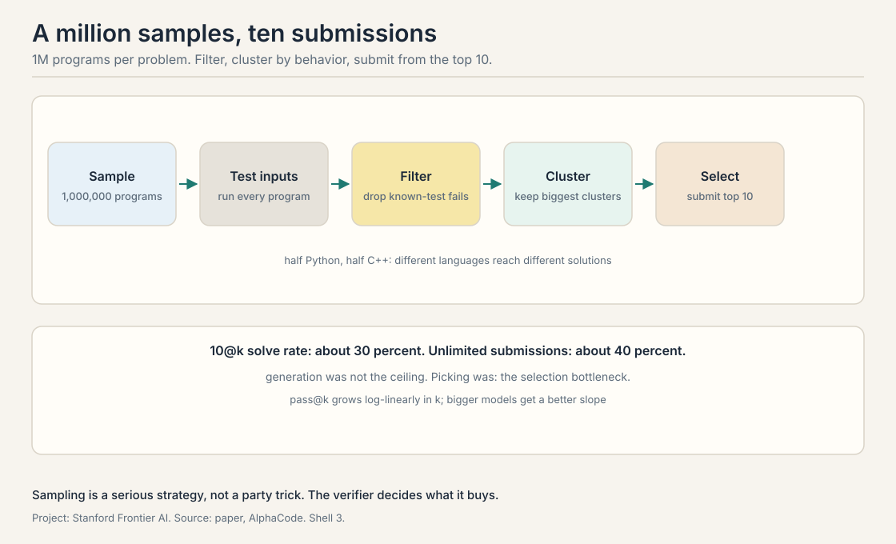
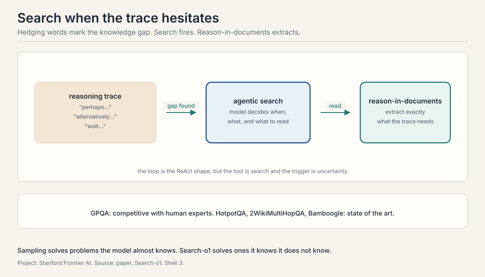

Lecture 5: Self-Improvement and Deep Research Agents
Video blocked (ad-blocker or local file mode).
Watch on YouTubeVideo not loading? Watch on YouTube
AlphaCode and AlphaCode 2 on sampling at competitive-programming scale, then Search-o1 and Search-R1 on agentic search for reasoning models.
A million tries per problem
Builds on: Lecture 2’s repeated sampling, pushed to industrial scale.
Lecture 2 sampled thousands of times. AlphaCode samples a million. The task is competitive programming: given a problem statement, write a program that passes hidden tests. The method is the generate-verify loop at industrial scale, and it is the clearest proof in the course that sampling is a serious strategy, not a party trick.
The pipeline has five stages. Sampling: generate 1,000,000 programs per problem, half Python and half C++. Two model sizes in the paper, 9B and 41B parameters. Test input generation: train a separate model to generate test inputs, then run every sampled program on them. Filtering: drop every program that fails known tests. Clustering: group the survivors by their behavior on the generated tests, programs that agree on outputs form a cluster, and keep the biggest clusters. Selection: submit from the top 10 clusters. The metric is 10@k: solve the problem if any of 10 submissions from k samples is correct.
The result: an average rank placing in the top 54 percent of 5,000 Codeforces participants across 10 contests, roughly 54.3 percent average rank. The findings the lecture stresses: pass@k grows log-linearly in k. Log-linear means each doubling of k buys the same additive gain, so the curve is a straight line when k is plotted on a logarithmic axis. The bigger models get a better slope, and there is a selection bottleneck. With unlimited submissions the solve rate reached about 40 percent, but under the 10@k constraint it fell to about 30. Generation was not the ceiling. Picking was.

Three training details from the lecture. GOLD regularization: the model is trained to match the distribution of good solutions, not just to maximize likelihood, so samples stay diverse. Value conditioning: the model is told the target quality during training and asked for high quality at sampling time. And the diversity is deliberate: half the samples in Python, half in C++, because different languages reach different solutions.
The honest weakness: AlphaCode is weak on dynamic programming and constructive problems, the ones that need a flash of insight rather than enumeration. Sampling covers the space of obvious approaches. It does not invent the clever one.
AlphaCode 2: learn to search
Builds on: AlphaCode’s sampling pipeline, replacing hand-designed filtering with a learned scorer.
AlphaCode 2 keeps the sampling strategy and improves the search. Built on a fine-tuned Gemini Pro family of models, it replaces hand-designed filtering with a learned scoring model that predicts which samples are worth keeping.
The pipeline tightens. On CodeContests v2, with C++ only, the system samples 1,000,000 programs, the scoring model filters 95 percent away leaving about 50,000, and clustering plus selection continues from there. The headline from the lecture: 100 samples from AlphaCode 2 match 1,000,000 samples from AlphaCode 1 on solve rate. At the million-sample budget, the solve rate rose from 25 to 43 percent, and the system reached the 85th percentile of contestants, up from the top 54 percent.
The lecture’s moral is the course’s moral in miniature. The first system scaled sampling. The second scaled the selection. The verifier, the scorer, the judge: every turn of the flywheel moves the bottleneck from generation to verification and back.
Search-o1: the model that knows it does not know
Builds on: The selection bottleneck, extending the loop to knowledge the weights do not contain.
Sampling solves problems the model almost knows. Search-o1 solves problems the model knows it does not know. It gives a reasoning model an agentic search loop: when the trace hits a knowledge gap, the model searches the web, reads documents, and continues reasoning with the new facts.
The mechanism has two parts. Agentic RAG: the model itself decides when to search, what to query, and which results to read, inside the reasoning loop. Reason-in-documents: a module that reasons over the retrieved documents to extract exactly what the trace needs, instead of dumping raw pages into context. The loop is the ReAct shape from Lecture 3, but the tool is search and the trigger is uncertainty.
How does the model know it has a gap? The lecture points to the trace itself. Words like “perhaps”, “alternatively”, and “wait” mark self-reflection: the model hedging, reconsidering, or catching its own error. Those moments are the search trigger. The paper’s carbon-atom example shows the mechanism: without search the model answers from memory and gets the count wrong, 10 versus the correct 14. With search it reads the facts and gets it right.
The results: on GPQA, Graduate-Level Google-Proof Q&A, a hard science benchmark, the model is competitive with human experts on the diagonal the lecture shows, and on HotpotQA, 2WikiMultiHopQA, and Bamboogle it reaches state of the art. More retrieved documents help up to a point: accuracy rises with document count, then the context fills and the gains flatten. The lecture names the follow-up, Search-R1, which trains the search behavior with reinforcement learning instead of prompting it, but covers it only as a pointer.

The selection bottleneck, restated
Builds on: All three systems, naming the pattern that repeats across them.
Put the three systems together and one pattern repeats. In AlphaCode, unlimited submissions solve 40 percent, 10@k solves 30: the gap is selection. In AlphaCode 2, the learned scorer closes most of that gap: 100 samples do the work of a million. In Search-o1, the model must select not just answers but questions: what to search for. Every system in this lecture generates far more than it can use, and its intelligence lives in what it keeps.
Sample 1,000,000 programs per problem, half Python, half C++. Generate test inputs with a separate model. Run all programs on them. Filter out failures. Cluster survivors by output behavior. Submit from the top 10 clusters. With 10 submissions the solve rate is about 30 percent. With unlimited submissions it would be about 40. The 10-point gap is the selection bottleneck: generation found the answer, selection could not always pick it. Many programs are textually different but computationally identical. Clustering by outputs on test inputs groups true duplicates, so the 10 submissions cover 10 genuinely different approaches instead of 10 spellings of one idea.
GOLD trains the model to match the distribution of good solutions rather than maximizing likelihood, which keeps the samples diverse. Maximum likelihood concentrates on the most common pattern. Diversity is the whole game when you sample a million times: identical samples waste the budget. Value conditioning tells the model the target quality during training, so at sampling time you can ask for the high-quality end of the distribution. Different languages reach different solutions. A Python-first approach and a C++-first approach explore different corners of program space. The split is deliberate diversity, same as temperature but structural.
Into the learned scoring model. AlphaCode 1 filtered with tests and clustered by hand-designed rules, which needed volume to work. AlphaCode 2 trained a scorer to predict which samples are promising, filtering 95 percent before clustering. The million samples were paying for bad selection. Better selection costs fewer samples. Yes: the scorer’s own accuracy. A perfect scorer needs one sample. A weak scorer needs the million back. The lecture’s 100-sample figure measures the scorer, not the generator.
The reasoning trace tells it. Hedging language, “perhaps”, “alternatively”, “wait”, marks moments of uncertainty or self-correction. Those moments trigger a search: the model queries, reads, and continues with facts. The carbon example: memory said 10, the documents said 14, and the trace’s hesitation was the signal to check. Context fills with documents, attention dilutes, and the model reasons over retrieval instead of the problem. The paper’s curve shows accuracy rising with document count then flattening. The reason-in-documents module exists to compress each retrieval to what the trace needs.
Dynamic programming needs the insight: the recurrence, the state definition. Sampling enumerates variations on approaches the model already considers. The clever reformulation is a single point in program space, not a region, so a million samples can miss it. The lecture is explicit: sampling scales the obvious, not the ingenious. A different generator: one that proposes reformulations, not completions. Or a verifier that rewards partial insight. The course’s later lectures on planning and reflection aim at exactly this gap.
AlphaCode is the generate step at scale. AlphaCode 2 is the verify step learning to be smarter. Search-o1 is the generate step learning to ask for help. The loop from Lecture 1 needs all three: generate broadly, verify sharply, and know when the weights do not contain the answer. The 40-to-30 selection gap is the loop’s current tax. Selection. The lecture’s numbers say generation already outruns it: 40 percent found, 30 percent picked. Every point of selection accuracy is a free point of solve rate with no new samples.
Search-o1 prompts the search behavior: the model is told when and how to search. Search-R1 trains it: reinforcement learning rewards traces that search well and answer right. The lecture names it as the direction without details. The bet is that learned search policies beat prompted ones, the same bet the whole course makes about learned versus hand-designed behavior. Not stated in the lecture. The honest answer: presumably answer correctness with a cost term for searches, so the model learns to search when it pays. Designing that reward without teaching the model to game it is the open problem.
Recap: the whole lesson on one screen
- A million tries. AlphaCode samples 1M programs, filters, clusters by behavior, submits 10. Top 54 percent of Codeforces. 10@k about 30 percent, unlimited about 40.
- Selection is the tax. The 10-point gap between found and picked is where intelligence lives.
- Learn the scorer. AlphaCode 2’s scoring model filters 95 percent. 100 samples match the old million. 85th percentile.
- Know what you lack. Search-o1 searches when the trace hesitates. Reason-in-documents compresses retrieval. GPQA competitive with experts.
- Sampling scales the obvious. Weak on DP and insight problems. The clever point in program space needs a different generator.
- The loop’s shape. Generate broadly, verify sharply, ask for help when the weights are empty.
Used where, as of October 2026
- Competitive programming with AI: AlphaCode (DeepMind, 2022, Science) reached the top 54.3 percent of Codeforces competitors with the sample-filter-cluster pipeline: generate millions of programs, filter by execution, cluster by behavior, submit 10. The pattern remains the evaluation template for code generation.
- Deep Research products: OpenAI Deep Research (February 2025) and Gemini Deep Research (rebuilt on Gemini 3 Pro, December 2025) run the agentic loop the lecture describes: an orchestrator plans, parallel sub-agents search, a synthesizer writes the cited report.
- Learned selection: AlphaCode 2 (DeepMind, 2024) replaced hand-designed filtering with a learned scoring model that filtered 95 percent of samples before clustering. The lecture’s template: selection learned, not hand-built.
- Agentic RAG in production (2026): retrieval embedded in the reasoning loop, the agent deciding when to retrieve and when to re-retrieve, is the documented production pattern (Dify, January 2026). Reason-in-documents anticipates it: compress each retrieval to what the trace needs.
Official sources and further reading
Official: - CS329A Part 7: Self-Improvement and Deep Research Agents (Autumn 2025). https://www.youtube.com/watch?v=Uni9dqyuuDM
Further reading: - Li et al., “AlphaCode” (2022). https://arxiv.org/abs/2203.07814 - Li et al., “Search-o1” (2025). https://arxiv.org/abs/2501.05366
Caveats from these sources. The AlphaCode numbers are from the 2022 paper and the lecture’s telling. The AlphaCode 2 figures are as reported in the lecture from DeepMind’s announcement. Search-R1 is named but not detailed in the lecture.
Connections to the other courses
- CS329Z: RAG and agentic retrieval from the builder side: how production systems implement the search loop Search-o1 studies.
- CS336: the base models under the sampling: what pretraining puts in the weights that a million samples draw out.
- CS229S: the systems cost of a million samples: how inference infrastructure makes the AlphaCode budget thinkable.